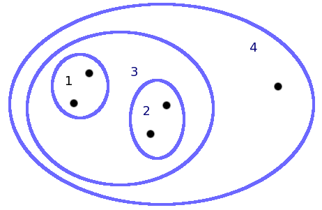
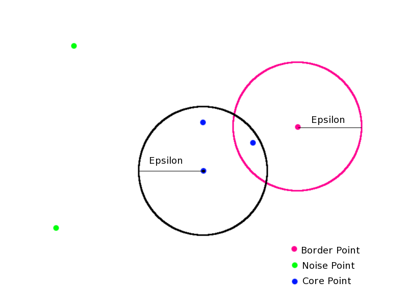

Clustering is simply the act of taking a collection of data points and creating groups (clusters). This can be done for meaning or utility or both. Clustering may seem like classification, taking points and putting them in different groups. However, in classification, we do not know the groups the data points will fall into. Clustering can take data and put it into meaningful groups, such as groups of people that like similar movies for a movie recommendation system. It could also be used to speed up other algorithms by grouping similar items with each other so searches go faster like in finding a nearest neighbor.
In K-Means clustering we find k groups of data points that are close together based on a similarity metric. K-means is a partitional, exclusive, complete clustering algorithm. Every point will end up in one and only one cluster.
The most basic version algorithm is stared by placing k centroids in the domain of the data we are trying to cluster. Each data point is then assigned to its nearest centroid. The centroid then is moved to the average of all of the points assigned to it. The process is then repeated with the centroids in their new location until either no data points switch centroids, or very few of them do.
We need to watch out for when a centroid is placed somewhere where there are no data points close to it because, then we would just be finding k-1 clusters. We also need to pick the best k for our data set. This can be determined by doing multiple iterations using different K values and comparing it to the sum of squared errors (SSE). This does not mean to find the Lowest SSE, because that is easily done, by having K-equal to the number of data points. K should balance SSE with few clusters.
This approach is great for making a hierarchical structure like a taxonomy. Data points are placed into clusters, which are then placed into other clusters.
The algorithm is simple to understand. We first say that every data point is a cluster. Then we find the two nearest clusters and combine them to create a new cluster. We repeat the process of finding the two nearest clusters until we have only one cluster. This is our stop condition.
The result of the algorithm is a tree. If we want a specific number of clusters, we can move down the tree until we have that many. The clusters are really best viewed as a tree to understand the structure of a data since this is the algorithm to create a tree.
A graphical view of agglomerative hierarchical clustering. The numbers represent the clusters in order of generation
Density based clustering looks for high density regions of the data that is separated from other high density regions and places those points into a cluster. This algorithm does not cluster every point. It only clusters the points that are within a specific measure of density.
DBSCAN works by quantifying density with 2 variables n and epsilon. This is the number of points, n, within distance epsilon, that a point can be labeled as a core point.
DBSCAN then starts off by assigning one of 3 labels to each point. They are:
After each point is labeled all noise points are eliminated. For each core point that is within epsilon of another core point an edge is placed between them. Each group of now connected core points is a cluster. Each border point goes into the cluster that the majority core points within epsilon were put in.
The following image illustrates DBSCAN with n=2.
